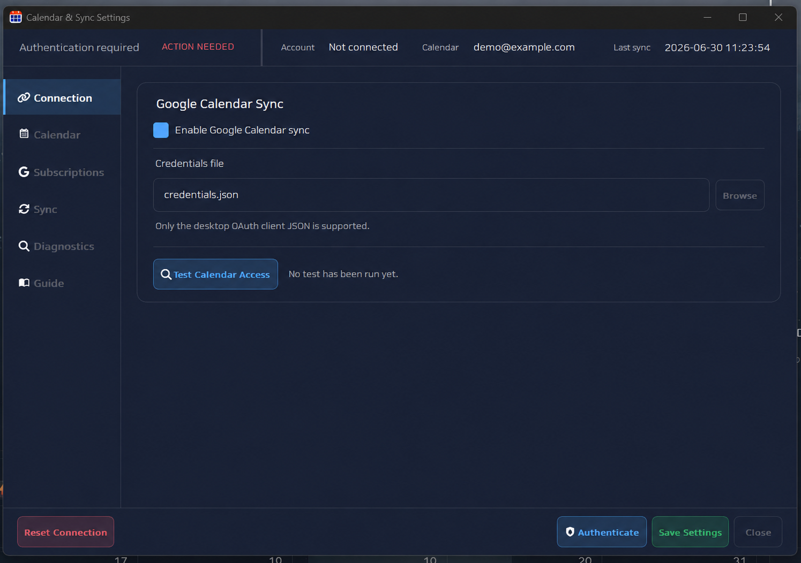

No account required
Use local calendars and widgets without enabling Google Calendar sync.
OPTIONAL GOOGLE CALENDAR SYNC
Air Calendar can show selected Google calendars alongside local schedules and tasks. The connection is optional, controlled by you, and configured with a desktop OAuth credential from your own Google Cloud project.
Paid app · One-time Google Cloud setup · Local calendar works independently

Use local calendars and widgets without enabling Google Calendar sync.
Connect the calendars you want to see rather than merging every calendar by default.
Supported schedule changes can move between Air Calendar and the selected Google calendar.
Create or choose a Google Cloud project, then enable Google Calendar API for that project.
Prepare the consent screen, add your Google account as a test user when required, and download the JSON credential for a Desktop app.
Open Calendar & Sync settings, choose the JSON file, start authorization, and approve access in the browser.
Choose the calendars to use, run the access test, and save only after the connection succeeds.